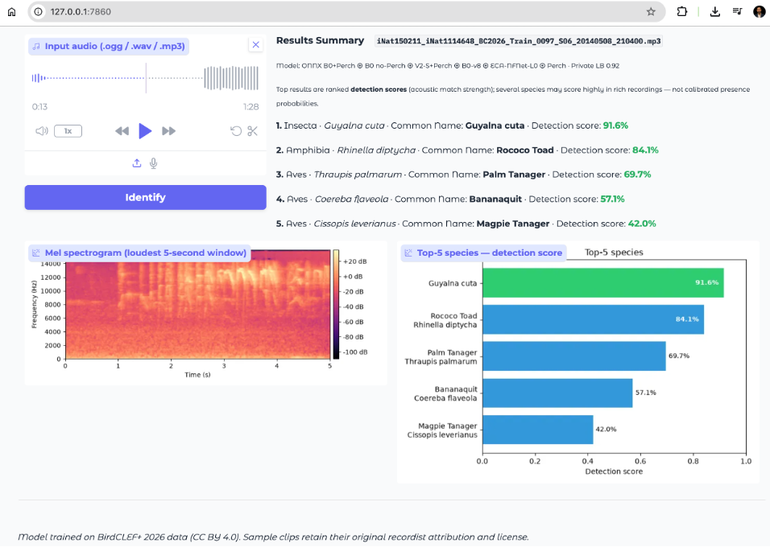
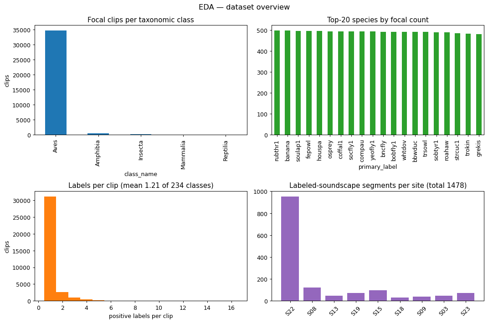

The core challenge is ecological, not cosmetic: most training examples are clean, close-range recordings, while real deployments face distant microphones, wind, insects, and multiple species calling at once. The pipeline combines efficient on-device models, teacher-guided learning from unlabeled soundscapes, and ensemble inference tuned for robust ranking scores.
01 / OVERVIEWProject overview
This project builds an offline acoustic wildlife identification system for Brazil's Pantanal—supporting field biologists, rangers, and citizen scientists who need reliable species detections without cloud connectivity. From short audio clips, the application estimates presence across 234 taxa (birds, amphibians, mammals, reptiles, and insects), including overlapping calls in noisy, far-field soundscapes. The core challenge is ecological, not cosmetic: most training examples are clean, close-range recordings, while real deployments face distant microphones, wind, insects, and multiple species calling at once. The pipeline combines efficient on-device models, teacher-guided learning from unlabeled soundscapes, and ensemble inference tuned for robust ranking scores in the UI—turning competition-grade research into a practical tool for biodiversity monitoring and conservation workflows.

02 / DATASETSource dataset

Data comes from the Kaggle BirdCLEF+ 2026 competition:
- Focal clips: short, single-species, close-mic training recordings (~35k used in the full pipeline)
- Soundscapes: long-form, multi-species field recordings (10,658 labeled segments for pseudo-labeling)
- 234 taxonomic classes across 161 genera, monitored at multiple Pantanal sites
- Site-22 held out as the leak-free generalisation proxy throughout training and harness gating
03 / ARCHITECTUREArchitectural evolution
From Phase 1 onward the CNN front-end was fixed: 128-mel log-spectrograms, 5 s windows @ 32 kHz, per-sample z-score, feeding an EfficientNet backbone with fp32-guarded GEM frequency pooling and an SED attention head. Training followed supervised → Noisy Student iter1 → Noisy Student iter2 on focal + labeled-soundscape streams.
-
Phase 0 — Minimal CPU baseline (EfficientNet-V2-B0, ImageNet pretraining):
Deliberately stripped pipeline to meet the 90-minute budget: 64 mels, min–max norm, global-average pool + linear head (no SED/GEM), 6 epochs on ≤3,000 focal clips, no self-training. Result: Private 0.499 / Public 0.555 — near-random, but proved the harness worked.
-
Phase 1 — Full ML stack (EfficientNet-B0, large-scale pretraining):
Rebuilt everything: ns_jft B0 backbone (JFT-300M + Noisy Student pretraining), 128-mel z-score front-end, ThreePoolHead + frame-max aux loss, fp32 GEM guard, BN recalibration, full focal + LSS data, 36 epochs with Noisy Student on 10,658 soundscapes. Result: Private 0.831 / Public 0.799 (+0.332 private vs Phase 0).
-
Phase 2 — B0 + Perch distillation:
Added Google Perch v8 cosine distillation via 36,073 precomputed embeddings (dim 1280) during supervised training only — zero inference cost. Best single CNN model: Private 0.84846 / Public 0.82698. Site-22 0.731; per-taxon: Amph 0.740, Aves 0.704, Mamm 0.756.
-
Phase 3 — EfficientNetV2-S + export bug (v3):
Swapped to V2-S backbone; scored Private 0.777 — an export bug shipped the early supervised-only model snapshot instead of the final self-trained checkpoint after two rounds of soundscape learning, not a backbone failure. Clean rerun (Phase 3 without Perch): Private 0.78679.
-
Phase 4 — V2-S + Perch + export fix (v4):
Added Perch distillation and a deterministic checkpoint-selection policy so the fully self-trained model is always packaged for submission — never an earlier supervised-only snapshot. Largest internal lift on greedy coverage (+0.064) but LB Private 0.803 — still below B0 baseline. The 2×2 ablation confirmed: B0 beats V2-S regardless of Perch; Perch adds a consistent ~+0.017 private lift on both backbones.
-
Phase 5 — Measure-first ensemble (v5):
No new training. Blended existing members on the Site-22 harness; fixed fractional time-shift TTA (+0.0165 Site-22 lift). No free blend beat the B0+Perch anchor. A coverage cap bug (200/10,658 files) suppressed one local smoke run — lesson carried forward for full-soundscape inference.
-
Phase 6 — Ensemble + rank-vs-prob bug (v6):
Trained a second B0 model without Perch distillation (provenance decorrelation, harness +TTA 0.7323). Two-member Kaggle submit scored Private 0.816 — flat vs v5 because rank blending was paired with probability-tuned post-processing. Fix: switched to probability-space blending so ensemble scores stay compatible with calibrated post-processing. Best PyTorch 2-member blend: Private 0.81465. PyTorch single-model champion (B0+Perch + TTA fix): Private 0.86259.
-
Phase 7 — ONNX 4-member ensemble (v7):
Replaced PyTorch forwards with ONNX Runtime to fit 4 models + TTA in the CPU budget. Members: B0+Perch (Phase 2), B0 without Perch (Phase 6), V2-S+Perch (Phase 4), and native Perch v2 at inference. Champion: Private 0.89774. D1/D2+D3 confirmatory submits regressed (0.89004 / 0.89348) — local Site-22 proxies did not predict LB for post-proc tuning.
-
Phase 8 — ONNX 5-member, diversity member (v8):
Added a distilled-SED EfficientNet-B0 that was weak alone (Site-22 ~0.727) but highly decorrelated from the anchor (correlation 0.243). Gating on diversity rather than solo strength lifted the stack to Private 0.91111 — the first configuration over the 0.90 target — with no change to the inference recipe.
-
Phase 9 — ONNX 6-member + selective TTA (v9, final champion):
Added a normalizer-free ECA-NFNet-L0 backbone family — the most decorrelated member on record (correlation 0.199), which lifted the ensemble ~+0.011 to Private 0.91802 at full coverage. A CPU-throughput spike then showed the pipeline is dominated by two heavy members (Perch, ECA), so selective TTA — augmenting only the three cheap B0s — recovered a further increment to Private 0.92041 / Public 0.90552 while staying inside the 90-minute budget. A key correctness fix this cycle: a fail-loud coverage guardrail, after a silently truncated (uniform-filled) test tail had masqueraded as a modelling regression. OpenVINO / INT8 acceleration was investigated and closed (Perch and ECA are unconvertible; net 1.00× speedup), so inference scaling is exhausted at this ceiling.


v9 ONNX 6-member ensemble — Private LB 0.92041 / Public 0.90552 (+0.0227 private vs the former v7 4-member champion). Five CNNs — including a deliberately decorrelated, normalizer-free ECA-NFNet-L0 (correlation 0.199 vs the anchor, the most decorrelated member on record) — plus a live native Perch v2, blended in probability space via ONNX Runtime on CPU with selective test-time augmentation (TTA on the cheap members only, to stay inside the 90-minute budget).
This cleared the 0.90 target. The gains came from error decorrelation and inference engineering, not a bigger network. The champion is now packaged in a deployable CPU identification app, and the project concludes here — remaining accuracy levers (XC-pretrained backbones, more families, soft pseudo-labeling) are documented as future work.
04 / RESULTSModel card
Verified clean runs and scored inference submissions. Metric: macro-averaged ROC-AUC over 234 species on 5-second windows. Erroneous exports (e.g. the original Phase 3 packaging mistake) and rejected harness runs (e.g. the failed pseudo-label training experiment) excluded.
Leaderboard ranking (Private LB)
| Rank | Run | Private | Public |
|---|---|---|---|
| 1 | v9 ONNX 6-member (5 CNN incl. ECA-NFNet-L0 @0.16 ⊕ native Perch) — selective TTA, full coverage · CHAMPION | 0.92041 | 0.90552 |
| 1a | v9 6-member — TTA-off, full coverage (same stack) | 0.91802 | 0.90477 |
| 2 | v8 ONNX 5-member (+ distilled-SED diversity member) — first over 0.90 | 0.91111 | 0.90247 |
| 3 | v7 ONNX 4-member (B0+Perch ⊕ B0 no-Perch ⊕ V2-S+Perch ⊕ native Perch) | 0.89774 | 0.89535 |
| 4 | PyTorch single-model (B0+Perch + TTA) | 0.86259 | 0.84613 |
| 5 | Phase 2 (B0 + Perch distill, single CNN) | 0.84846 | 0.82698 |
| 6 | Phase 1 (B0, no Perch) | 0.831 | 0.799 |
| 7 | 2-member prob-blend (B0+Perch + B0 no-Perch) | 0.81465 | 0.80270 |
| 8 | Phase 4 (V2-S + Perch) | 0.803 | 0.797 |
| 9 | Phase 3 clean rerun (V2-S, no Perch) | 0.78679 | 0.78683 |
| 10 | Phase 0 baseline (minimal submit) | 0.499 | 0.555 |
Training validation (final self-trained checkpoint)
| Run | Focal | Site-22 | Greedy | LSS | Site-22 taxon (Amph / Aves / Mamm) |
|---|---|---|---|---|---|
| Phase 1 (B0, no Perch) | 0.943 | 0.683 | 0.767 | 0.725 | 0.757 / 0.604 / 0.700 |
| Phase 2 (B0 + Perch) | 0.952 | 0.731 | 0.745 | 0.738 | 0.740 / 0.704 / 0.756 |
| Phase 3 clean rerun (V2-S, no Perch) | — | 0.652 | 0.767 | 0.709 | — |
| Phase 4 (V2-S + Perch) | 0.958 | 0.654 | 0.824 | 0.739 | 0.735 / 0.590 / 0.431 |
Evaluation layers
| Layer | Protocol | Use for |
|---|---|---|
| Training notebook | Site-22 macro-AUC, no TTA, per-phase peaks | Training progress, export decisions |
| Site-22 harness | 954 windows, BN recal, prob-space TTA, real post-proc | Ensemble gate, blend A/B, promotion decisions |
| Kaggle LB | Hidden test set, CPU-only submit | Authoritative final score |
Site-22 is the held-out monitoring site. Harness and LB can disagree on ensembles — the V2-S+Perch and ECA-NFNet members were modest standalone yet lifted the ensemble, because the payoff is error decorrelation, not solo accuracy. Note also that the hidden evaluation proved non-stationary (byte-identical submits varied by ~±0.006), so members were compared back-to-back rather than against a stored number.
05 / INFERENCEInference stack (champion)
The 0.92041 score came from inference engineering, not new CNN training. Six pre-exported ONNX members from earlier clean runs are combined at submit time:
| Member | Source run | Role |
|---|---|---|
| B0 + Perch (anchor CNN) | Phase 2 training run | Primary distilled model |
| B0 without Perch | Phase 6 training run | Decorrelated second opinion (different training recipe) |
| V2-S + Perch | Phase 4 training run | Backbone-family diversity |
| B0 distilled-SED | Phase 8 training run (v8) | Low-correlation diversity member (corr 0.243) |
| ECA-NFNet-L0 @0.16 | Phase 9 training run (v9) | Normalizer-free family — most decorrelated member (corr 0.199) |
| Native Perch v2 | Google Perch v2 (external) | Live acoustic classifier mapped to 234 competition classes |
Pipeline at score time:
- Decode once per soundscape; build log-mel for CNN members, raw waveform for Perch
- ONNX Runtime on CPU (offline wheels — Kaggle submit has no internet)
- Selective prob-space TTA — ±0.5 s time shift ×3 on the three cheap B0 members only; the heavy members (Perch, ECA, V2-S) run single-pass to stay in budget
- Prob-blend the five CNN members; apply Perch rank gate on combined output
- Post-processing at champion settings: genus-level score mirroring, temporal continuity smoothing, and moderate Perch gating on the blended CNN output
- Coverage guardrail — fail-loud if the full hidden test set is not processed within budget (never silently uniform-fill an unprocessed tail)
PyTorch is retained only for audio I/O (decode + mel); all forward passes run through ORT. Pure PyTorch cannot fit six members in the CPU budget — ONNX was load-bearing, not optional. A CPU-throughput profile showed the two heaviest members (Perch ~44%, ECA ~22%) dominate, which is exactly why TTA is applied selectively.
06 / MLOPSMLOps & reproducibility
Why MLOps mattered here
This was a months-long solo research effort spanning dozens of training runs, ensemble experiments, and Kaggle submissions. Without disciplined experiment tracking, it is easy to ship the wrong model snapshot, confuse a local validation win with a real leaderboard gain, or repeat an expensive GPU run with no clear hypothesis. MLOps — in the practical sense of machine learning operations — turned ad-hoc notebook work into a repeatable, auditable process: every run has a stated goal, measured outcome, promotion decision, and a single place to see what the current champion is.
The v3 export bug is the clearest example: the model looked weaker than it was because the submission packaged an early checkpoint. Formal checkpoint-selection rules and a run registry prevent that class of silent failure from reaching production or competition submits.
Best practices incorporated
- Hypothesis before heavy training — each experiment states what it is testing and when to stop, avoiding open-ended GPU spend
- Central run registry — every experiment records its goal, configuration, metrics, artifacts, and final promote/reject/hold decision in one auditable place
- Site-22 promotion gate — no model joins the submission ensemble unless it clears a standalone quality bar on held-out audio and improves the blend in probability space with test-time augmentation
- Two-layer evaluation — training-time Site-22 tracks learning progress; a separate submission-parity harness mirrors real inference (recalibration, TTA, post-processing) before any Kaggle submit
- Deterministic packaging — submission bundles always prefer the final self-trained checkpoint over earlier supervised-only snapshots, regardless of misleading intermediate scores
- Champion tracking — a living dashboard shows the current best submission, timeline of runs, gate pass/fail status, and training curves without digging through notebooks
- Pre-submit checklist — blend mode, coverage, and inference budget are verified before a competition submit is allowed
- Documented invariants — non-negotiable rules earned through debugging (BatchNorm recalibration, fp32 guard on fragile pooling, train/inference front-end parity) are enforced across every run
Outcome
The champion ONNX ensemble (Private LB 0.92041) is the direct result of this discipline: only verified, correctly packaged models entered the six-member stack; rejected candidates — the failed pseudo-label training run, and an HGNetV2-B0 member that was well-decorrelated but too weak solo — never reached submission. The discipline also caught two subtle late failures: a silently truncated test tail (fixed with a fail-loud coverage guardrail) and a non-stationary evaluation (handled by comparing candidates back-to-back). The project closes at 0.92041, above the 0.90 target.
07 / LESSONSKey lessons
The two largest early wins were debugging wins, not tuning wins: fp16 overflow in GEM pooling (pow(p≈3) under AMP) and BatchNorm statistics mismatch at inference both collapsed AUC to ≈0.5. Fixing them unlocked the Phase 0 → Phase 1 jump (+0.332 private LB) alongside the full stack rebuild — better backbone, z-score 128-mel front-end, soundscape self-training, and SED head.
-
Trust Site-22, not focal AUC or the public leaderboard
Focal AUC (~0.94) and greedy coverage were optimistic; Site-22 (held-out monitoring site) was the honest generalisation proxy. The harness extends this with submission-parity TTA and post-processing.
-
The export path is as load-bearing as the model
v3's regression was an export bug: the submission packaged an early supervised-only snapshot instead of the final self-trained model after two rounds of soundscape learning. A deterministic checkpoint-selection policy fixed this — always ship the fully trained model, never an intermediate snapshot. Several runs peaked mid-training but still exported a later, weaker checkpoint until export policy was aligned with validation peaks.
-
Prob blend, not rank blend, for post-processed ensembles
v6 scored flat because rank-uniform scores were fed into probability-tuned post-processing (site/hour priors, score boosting, taxonomy smoothing). Switching to probability-space blending recovered the loss.
-
Native Perch > distillation-only; harness ≠ LB for ensembles
Running Perch live at inference diversifies error vs B0+Perch distill alone — the largest conceptual shift since the prob-blend fix. V2-S+Perch failed Site-22 standalone yet helped the 4-member ONNX stack reach 0.898; treat harness as a coarse gate, not an LB oracle.
-
B0 + ns_jft pretraining beats V2-S on this task
The 2×2 ablation showed pretraining provenance (+0.044 private) matters more than architecture depth. Perch distillation adds a consistent ~+0.017 lift regardless of backbone.
-
Ensemble headroom is decorrelation, not solo peak accuracy
The decisive late members were weak alone but complementary: a distilled-SED B0 (corr 0.243) took the stack over 0.90, and a normalizer-free ECA-NFNet-L0 (corr 0.199, the most decorrelated on record) added ~+0.011 more. A rejected HGNetV2-B0 was well-decorrelated too, but too weak solo to help — decorrelation cannot rescue a member that is individually too weak.
-
Coverage is a correctness bug, and the eval can move under you
A silently truncated test tail (uniform-filled when inference ran out of budget) looked like a modelling regression for weeks; a fail-loud coverage guardrail plus TTA applied only to cheap members fixed it. The hidden test also proved non-stationary (byte-identical submits varied ~±0.006), so candidates are compared back-to-back, never against a stored number.
-
Single-model ceiling; ensemble + inference stack close the gap
Best single CNN: 0.848. PyTorch 1-member + TTA: 0.863. ONNX 4-member: 0.898; 5-member: 0.911; 6-member + selective TTA: 0.92041. Every gain from v7 onward came from recomposing existing checkpoints under a submission-parity ONNX spec — not from a stronger single model.
08 / CONCEPTSKey concepts
Plain-English glossary for terms used above.
GEM pooling & fp16 overflow
Generalized mean pooling raises feature values to a power (~3), averages, then takes the root — between average and max pooling. With p≈3, values like 50³ = 125,000 overflow fp16 under AMP. Fix: run GEM/head in fp32 while the rest uses mixed precision.
BatchNorm recalibration
BN running stats learned on augmented training audio mismatch clean inference inputs, collapsing predictions. Recalibrate on clean soundscape-like audio before every eval/submit pass.
Analogy: calibrating a scale while wearing a backpack, then weighing without it.
Noisy Student self-training
Pseudo-label unlabeled soundscapes with the current model, then retrain on those labels with noise augmentation. Exposes the model to the far-field, multi-species domain it will be tested on.
Perch distillation vs native Perch
Distillation: precomputed Perch embeddings guide CNN training; teacher not run at inference. Native: Perch runs live as a fourth ensemble member at inference — diversifies errors beyond what distillation alone captures.
Prob blend vs rank blend
Prob blend averages sigmoid probabilities — compatible with logit-space post-processing. Rank blend converts scores to uniform ranks per class — breaks priors and smoothing tuned for probabilities. The v6 regression came from mixing these.
SED head & frame-max loss
The SED attention head weights each time frame; frame-max auxiliary loss supervises the loudest frame so brief calls (e.g. one 0.4 s vocalization in 5 s) are not drowned by global average pooling.
09 / APPThe deployed app
The champion is packaged in a lightweight, CPU-only identification app. An Identify tab returns ranked species detections with a mel-spectrogram (defaulting to the 6-member champion, with single-model options retained for comparison); a Browse tab explores the labeled sample library by taxon, then species. In a stress test, a composite clip overlaying two focal recordings on a night-time soundscape was still correctly resolved to its focal species — a qualitative check on the focal-to-soundscape robustness the whole project targets.
10 / NEXTWhat's next
The project is closed at the 6-member champion (Private 0.92041), above the 0.90 target. Inference scaling is exhausted (OpenVINO / INT8 closed as a dead end), so the remaining gap to the top solutions (~0.95–0.96) is an accuracy question. Three levers were scoped and evidence-ranked but not executed — the recommended path for anyone resuming the work:
- XC-pretrained backbones: initialise from public Xeno-Canto-pretrained bioacoustic weights instead of ImageNet — the most consistent single-model lever among medalists
- More backbone families: add further decorrelated families (SwinV2, HGNetV2 with in-domain init, ConvNeXt, RegNetY)
- Soft pseudo-labeling: proper multi-round soft pseudo-labeling with a foundation-model (Perch) teacher and soundscape substitution